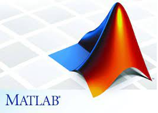

Guy Paiss
paissguy@gmail.com
This website was made to further describe my fortes for company recruiters and to show a bit of my web developing skill. My skill set includes proficiency with the programming languages such as: Python, JavaScript, C and Java. I have gained experice by doing projects in react-js and node-js as well. Besides programming, my specialization is in the exact science field, specifically in applied physics, probability and optics. I am currently looking for a full-time challenging position that utilizes my skills, either in programming or in electro-optics.
My previous titles includes a teaching assistant in python for BSc Students in Tel-Aviv University, A quality control officer in plastics specificly for the IDF as part of the army "atuda", and a BSc graduate in Computer-Science and chemistry from Tel-Aviv University.
I have currently finished a master's research in optoelectronics at Professor Ori Cheshnovski's research group in the Chemistry Department. I am currently looking for a full-time position that utilizes my skills.
Portfollio (Summer 2021)
I attached here some of the work projects I've done over the years in a variety of subjects.
Software Development
Over the course of my studies I have done a variety of software development projects, either for my MSc or as part of courses education
C Programming
Duing my MSc we had to incorporate many industrial instruments like piezo-electric stages, lasers, Data acquisition instruments and optical electromagnetic modulators all in one program. We had to make it as simple, efficient and generic as possible in order to be able incoporating as many new instruments and be able to measure many times during our research. To those ends we used the CVI/Labwindows GUI and we worked with the instrument's dll's and sdk's, using multithreading programming methods as well. Our code also had to be robust in order not to damage any instrument (like the Super-Continuum laser) while we have open COM port with any expensive instrument.
Frontend Programming with React-js
As part of Tel-Aviv University I had access to online courses providers such as Lynda and Coursera. With the help of those courses I was able to sharpen my skills in web-developing and keep me up to date with the latest technologies. I attach here my final project which was made by the Hong-Kong University as part of its Full-Stack Web Development with React Specialization which was uploaded using Coursera. During the React courses I have taken I became familliar with using redux, hooks and animations.
Data Analysis and Algorithm Development with Matlab
As part of my MSc I had to analyize my data and utilize advanced algorithms as one can see in the "Determination of Handedness in a Single Chiral Nanocrystal via Circularly Polarized Luminescence" article made in my lab. Besides of real life analysis I implemented using matlab and can be shown in my thesis, I have also learned using matlab using online courses as well. Attached here a live script pdf export made using matlab as part of an online matlab course, In which I had to do data analysis for the 2017 weather incidents in order to create an informative report on the Harvey Tornado.

Report made as part of " Data Science with MATLAB " specialization. Consists of visualization and Live scripts features.
Curriculum Vitae
I have included an abridged version of my cv here with my MSc grades included.
Publications
Author, Uri Hananel, Gal Schwartz, Guy Paiss, Lorenzo Arrico, Francesco Zinna, Lorenzo Di Bari, Ori Cheshnovsky, Gil Markovich(2020). "Time‐resolved circularly polarized luminescence of Eu3+ ‐ based systems
Author, Gyanendra Singh, Yossi Mosbacher, Ranit Roy, Dror Hershkovitz, Guy Paiss, Ori Cheshnovsky. "STEND: Stimulated emission non-linear-depletion super-resolution microscopy